Java REPL (Interactive Developer Console) for Moleculer microservices framework. The REPL console is a special Moleculer service that executes console commands. Console commands can be used to test Moleculer actions and event listeners or measure the response time of a service. It is also possible to create custom commands. The console can be used via standard input / output and telnet.
# Download
Maven
<dependencies>
<dependency>
<groupId>com.github.berkesa</groupId>
<artifactId>moleculer-java-repl</artifactId>
<version>1.2.1</version>
<scope>runtime</scope>
</dependency>
</dependencies>
Gradle
dependencies {
compile group: 'com.github.berkesa', name: 'moleculer-java-repl', version: '1.2.1'
}
# Usage from code
// Create Service Broker
ServiceBroker broker = new ServiceBroker();
broker.start();
// Switch to REPL mode
broker.repl();
# Usage with Spring Framework
<?xml version="1.0" encoding="UTF-8"?>
<beans xmlns="http://www.springframework.org/schema/beans"
xmlns:xsi="http://www.w3.org/2001/XMLSchema-instance" xmlns:context="http://www.springframework.org/schema/context"
xsi:schemaLocation="http://www.springframework.org/schema/beans
http://www.springframework.org/schema/beans/spring-beans-3.0.xsd
http://www.springframework.org/schema/context
http://www.springframework.org/schema/context/spring-context-3.0.xsd">
<!-- ENABLE ANNOTATION PROCESSING -->
<context:annotation-config />
<!-- PACKAGE OF THE MOLECULER SERVICES -->
<context:component-scan base-package="my.services" />
<!-- SPRING REGISTRATOR FOR MOLECULER SERVICES -->
<bean id="registrator" class="services.moleculer.config.SpringRegistrator" depends-on="broker" />
<!-- SERVICE BROKER INSTANCE -->
<bean id="broker" class="services.moleculer.ServiceBroker" init-method="start" destroy-method="stop">
<constructor-arg ref="brokerConfig" />
</bean>
<!-- SERVICE BROKER SETTINGS -->
<bean id="brokerConfig" class="services.moleculer.config.ServiceBrokerConfig">
<property name="nodeID" value="node-1" />
</bean>
<!-- LOCAL DEVELOPER CONSOLE -->
<bean id="$repl" class="services.moleculer.repl.LocalRepl" />
</beans>
# Screenshot
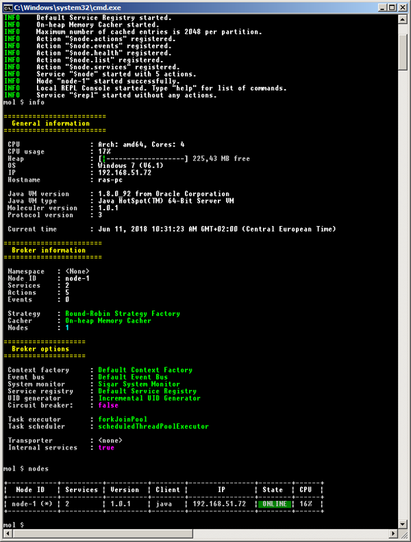
# REPL Commands
Commands:
actions [options] List of actions
bench <action> [jsonParams] Benchmark a service
broadcast <eventName> Broadcast an event
broadcastLocal <eventName> Broadcast an event locally
call <actionName> [jsonParams] Call an action
clear <pattern> Delete cached entries by pattern
dcall <nodeID> <actionName> [jsonParams] Direct call an action
emit <eventName> Emit an event
env Lists of environment properties
events [options] List of event listeners
exit, q Exit application
find <fullClassName> Find a class or resource
gc Invoke garbage collector
info Information about the broker
memory Show memory usage
nodes [options] List of nodes
props List of Java properties
services [options] List of services
threads List of threads
# List nodes
mol $ nodes
Options
--help output usage information
--details, -d detailed list
--all, -a list all (offline) nodes
--raw print service registry as JSON
--save [filename], -a save service registry to JSON file
Output
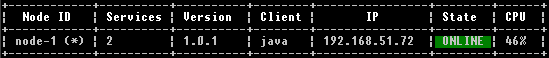
Detailed output
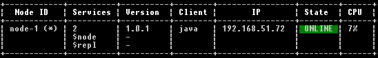
# List services
mol $ services
Options
--local, -l only local services
--skipinternal, -i skip internal services
--details, -d print endpoints
--all, -a list all (offline) services
Output
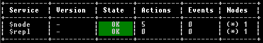
Detailed output
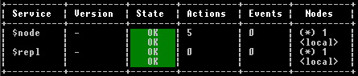
# List actions
mol $ actions
Options
--local, -l only local actions
--skipinternal, -i skip internal actions
--details, -d print endpoints
--all, -a list all (offline) actions
Output
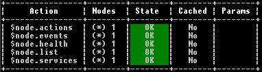
Detailed output
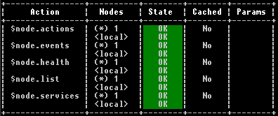
# List events
mol $ events
Options
--local, -l only local event listeners
--skipinternal, -i skip internal event listeners
--details, -d print endpoints
--all, -a list all (offline) event listeners
Output
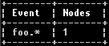
Detailed output
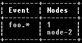
# Show common information
mol $ info
Output
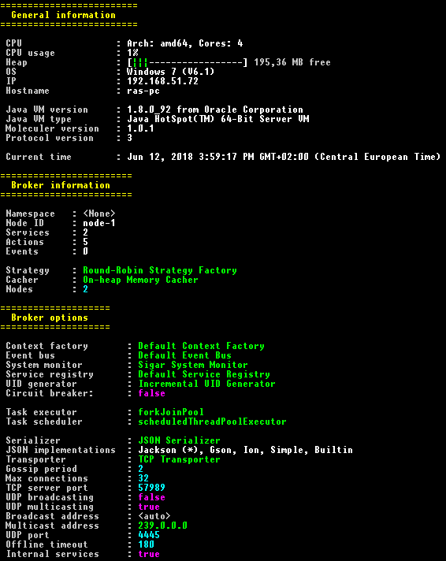
# List environment variables
mol $ env
# List system properties of JavaVM
mol $ props
# Call an action
mol $ call math.add {"a":3,"b":4}
Output
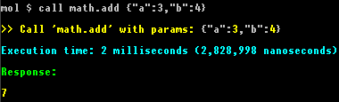
# Call an action with parameters
mol $ call math.add --a 5 --b Bob --c --no-d --e.f "hello"
# Call with JSON string parameter
mol $ call math.add {"a": 5, "b": "Bob", "c": true, "d": false, "e": { "f": "hello" } }
Params will be {"a":5, "b":"Bob", "c":"--no-d", "e":{ "f":"hello" }}
Output
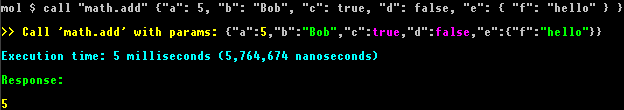
# Direct call
Get health info from node-12 node
mol $ dcall node-12 $node.health
Parameter passing is similar to
callcommand.
# Emit an event
mol $ emit user.created
# Emit an event with parameters
mol $ emit user.created --a 5 --b Bob --c --no-d --e.f "hello"
Params will be {"a":5, "b":"Bob", "c":"--no-d", "e":{ "f":"hello" }}
# Benchmark services
Moleculer REPL module has a new bench command to measure your services.
# Call service until 5 seconds (default)
mol $ bench $node.list
Output
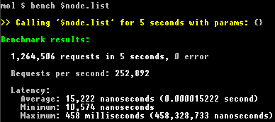
# Call service until 30 seconds
mol $ bench $node.list --time 30
Output
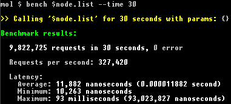
# Call service 5000 times
mol $ bench $node.list --num 5000
Output
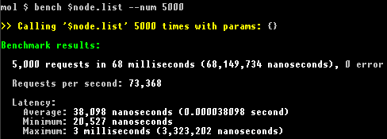
# Parameters
mol $ bench math.add --time 10 --a 3 --b 6
# or
mol $ bench math.add --time 10 {"a":3,"b":6}
Output
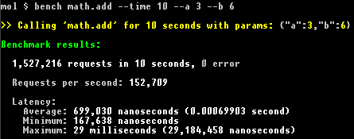
# Dump hierarchy of threads
mol $ threads
Output
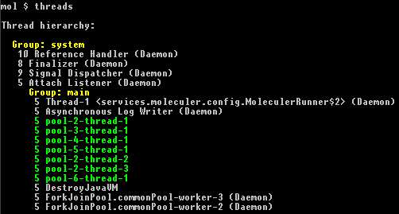
# Show JVM's heap usage
mol $ memory
Output
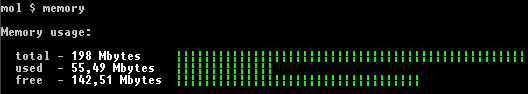
# Invoke Garbage Collector
mol $ gc
Output
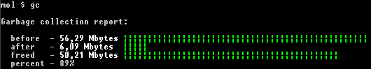
# Runs a script file
mol $ run /temp/commands.txt
Loads a "script" file and executes all non-empty lines as command. Skips rows that begin with a "comment marker" characters (hashmark, double slash or star). The script file must be in UTF-8.
# User-defined commands
You can define your custom REPL commands in broker options to extend Moleculer REPL commands.
Source of the "hello" console command
package my.commands;
import java.io.PrintWriter;
import java.util.Arrays;
import java.util.List;
import services.moleculer.ServiceBroker;
import services.moleculer.repl.Command;
import services.moleculer.service.Name;
@Name("hello")
public class HelloCommand extends Command {
public HelloCommand() {
option("uppercase, -u", "uppercase the name");
}
@Override
public String getDescription() {
return "Call the greeter.hello service with name";
}
@Override
public String getUsage() {
return "hello [options] <name>";
}
@Override
public int getNumberOfRequiredParameters() {
// One parameter (the "name") is required
return 1;
}
@Override
public void onCommand(ServiceBroker broker,
PrintWriter out,
String[] parameters) throws Exception {
// Parse parameters
List<String> params = Arrays.asList(parameters);
boolean uppercase = params.contains("--uppercase") ||
params.contains("-u");
// Last parameter is the name
String name = parameters[parameters.length - 1];
if (uppercase) {
name = name.toUpperCase();
}
// Call the "greeter.hello" service
broker.call("greeter.hello", name).then(rsp -> {
// Print response
out.println(rsp.asString());
}).catchError(err -> {
// Print error
err.printStackTrace(out);
});
}
}
Source of the "greeter.hello" action
package my.services;
import services.moleculer.service.*;
@Name("greeter")
public class GreeterService extends Service {
@Name("hello")
public Action helloAction = ctx -> {
return "Hello " + ctx.params.asString();
};
}
Installation of the "hello" command from code
ServiceBroker broker = new ServiceBroker();
// Start local REPL console
LocalRepl repl = new LocalRepl();
repl.setPackagesToScan("my.commands");
broker.createService("$repl", repl);
Installation of the "hello" command with Spring
<bean id="$repl" class="services.moleculer.repl.LocalRepl">
<property name="packagesToScan" value="my.commands" />
</bean>
Output of "help" command
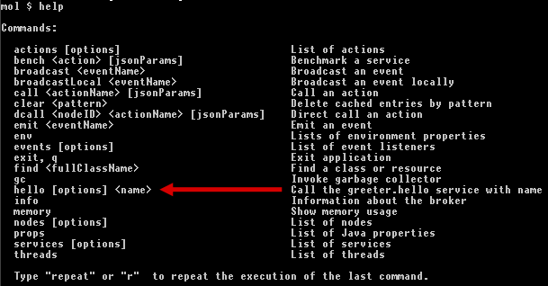
Invoke the "hello" command
mol $ hello -u John
Hello JOHN